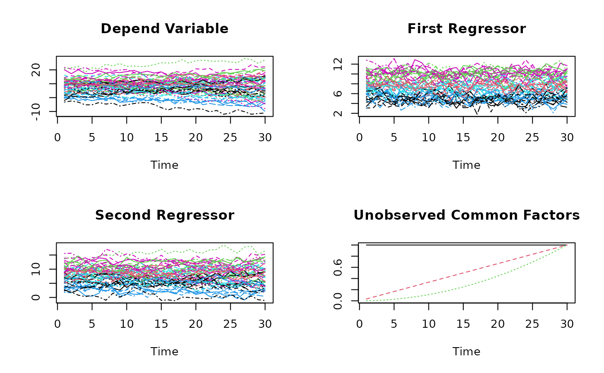

Simulated Panel-Data Set with Polynomial Factor Structure and endogenous regressors.
Simulated_KSS_Data_DGP2.RdA Panel-Data Sets with:
time-index : t=1,...,T=30
individual-index : i=1,...,N=60
This panel-data set has a polynomial factor structure (3 common factors) and endogenous regressors.
Usage
data(DGP2)Format
A data frame containing :
- Y
dependent variable as N*T-vector
- X1
first regressor as N*T-vector
- X2
second regressor as N*T-vector
- CF.1
first (unobserved) common factor: \($CF.1(t)=1$\)
- CF.2
second (unobserved) common factor: \($CF.2(t)=\frac{t}{T}$\)
- CF.3
thrid (unobserved) common factor: \($CF.3(t)=\left(\frac{t}{T}\right)^2$\)
Remark: The time-index t is running "faster" than the individual-index i such that e.g. Y_it is ordered as: \($Y_{11},Y_{12},\ldots,Y_{1T},Y_{21},Y_{22},\ldots$\)
Details
The panel-data set DPG2 is simulated according to the simulation-study in Kneip, Sickles & Song (2012): \($Y_{it}=\beta_{1}X_{it1}+\beta_{2}X_{it2}+v_i(t)+\epsilon_{it}\quad i=1,\dots,n;\quad t=1,\dots,T$\) -Slope parameters: \($\beta_{1}=\beta_{2}=0.5$\)
-Time varying individual effects being second order polynomials: \($v_i(t)=\theta_{i0}+\theta_{i1}\frac{t}{T}+\theta_{i2}\left(\frac{t}{T}\right)^2$\) Where theta_i1, theta_i1, and theta_i1 are iid as N(0,4)
The Regressors X_it=(X_it1,X_it2)' are simulated from a bivariate VAR model: \($X_{it}=R X_{i,t-1}+\eta_{it}\quad\textrm{with}\quad R=\left(\begin{array}{cc}0.4&0.05\\0.05&0.4\end{array}\right)\quad\textrm{and}\quad \eta_{it}\sim N(0,I_2)$\)
After this simulation, the N regressor-series \($(X_{1i1},X_{2i1})',\dots,(X_{1iT},X_{2iT})'$\) are additionally shifted such that there are three different mean-value-clusters. Such that every third of the N regressor-series fluctuates around on of the following mean-values \($\mu_1=(5,5)',\;\mu_2=(7.5,7.5)',\textrm{ and }\;\mu_3=(10,10)'$\)
In this Panel-Data Set the regressor X_it2 is made endogenous by the re-definition: \($X_{it2}:=X_{it2}+0.5 v_i(t)$\)
See Kneip, Sickles & Song (2012) for more details.
References
Kneip, A., Sickles, R. C., Song, W., 2012 “A New Panel Data Treatment for Heterogneity in Time Trends”, Econometric Theory
Examples
data(DGP2)
## Dimensions
N <- 60
T <- 30
## Observed Variables
Y <- matrix(DGP2$Y, nrow=T,ncol=N)
X1 <- matrix(DGP2$X1, nrow=T,ncol=N)
X2 <- matrix(DGP2$X2, nrow=T,ncol=N)
## Unobserved common factors
CF.1 <- DGP2$CF.1[1:T]
CF.2 <- DGP2$CF.2[1:T]
CF.3 <- DGP2$CF.3[1:T]
## Take a look at the simulated data set DGP2:
par(mfrow=c(2,2))
matplot(Y, type="l", xlab="Time", ylab="", main="Depend Variable")
matplot(X1, type="l", xlab="Time", ylab="", main="First Regressor")
matplot(X2, type="l", xlab="Time", ylab="", main="Second Regressor")
## Usually unobserved common factors:
matplot(matrix(c(CF.1,
CF.2,
CF.3), nrow=T,ncol=3),
type="l", xlab="Time", ylab="", main="Unobserved Common Factors")

par(mfrow=c(1,1))
## Esimation
KSS.fit <- KSS(Y~-1+X1+X2)
#> Dimensions of factors: 30 2
#> Dimensions of loadings: 60 2
#> Dimensions of TR.Y.mat: 30 60
#> Dimensions of factor.stract: 30 60
(KSS.fit.sum <- summary(KSS.fit))
#> Call:
#> KSS.default(formula = Y ~ -1 + X1 + X2)
#>
#> Residuals:
#> Min 1Q Median 3Q Max
#> -3.70 -0.84 0.02 0.84 4.77
#>
#>
#> Slope-Coefficients:
#> Estimate StdErr z.value Pr(>z)
#> X1 0.0000 0.0318 0 1
#> X2 0.0000 0.0307 0 1
#>
#> Additive Effects Type: none
#>
#> Used Dimension of the Unobserved Factors: 2
#>
#> Residual standard error: 1.67 on 1618 degrees of freedom
#> R-squared: 0.96
plot(KSS.fit.sum)